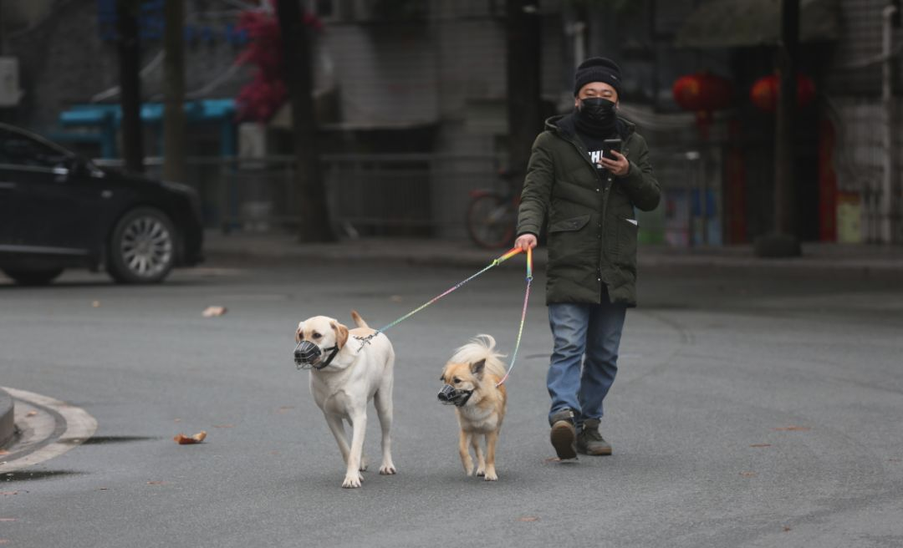
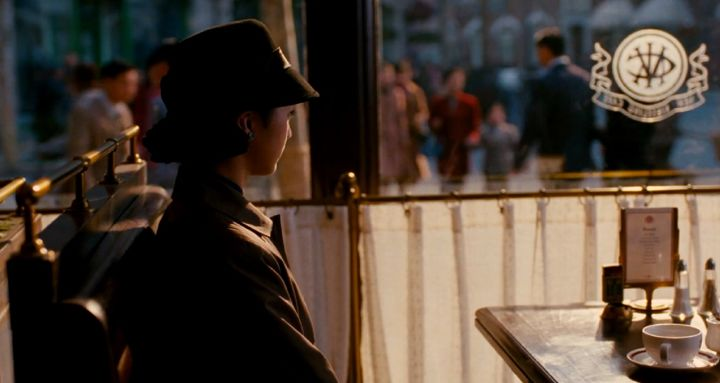
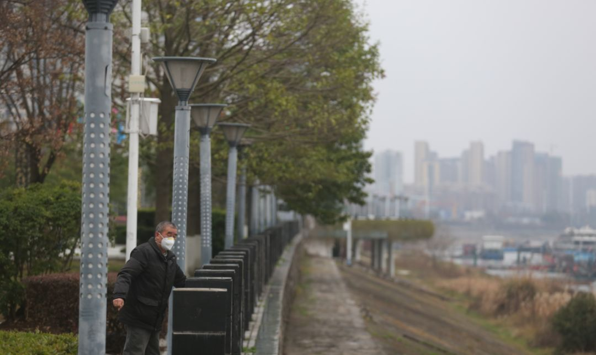

专访高文斌：疫情期间心理建设尤其重要
原文链接 备份链接 中国科学院心理研究所的研究员高文斌，是2003年北京小汤山“SARS患者与医护人员的心理干预”项目和“中科院心理所非典心理咨询热线”的负责人。 在接受本刊采访时，他认为，这次新冠疫情，尤其需要加强社会层面的心理引导和 …
本文系读者投稿。
来稿请投：zhuangao@lifeweek.com.cn
楼下的一对夫妻在打羽毛球，球网接触球发出的“嘣嘣”声在空气中跳动，一下一下，听得人眉毛也跟着抖；隔壁的邻居又在弹钢琴，钢琴声不成调，弹得缓慢又迟疑，像午后稀疏的阳光往墙下移（他晚上还要弹一次）；偶尔看到骑自行车的人从小巷子那头过来，总要特别留意他们的嘴部——果然戴着各式的口罩（今天的这位女士戴了一个黑色棉质的，像个三缄其口的革命者，踩着脚踏板有些吃力但不失决绝地一径溜了过去）。

这是个阴天。南方的天气像疯女人，明明昨天还阳光明媚仿佛上帝的恩赐，过一天便凄风苦雨，雨滴如同怨妇的眼泪稀稀拉拉下个不停；再过一日是半天晴朗半天阴沉，在下午四点左右蓦地回光返照，来了几束阳光，把这在瞌睡中的老城区照耀得犹如欧洲小镇般典雅又沉静。
这一个月的日子仿佛被偷来的一样，极不真实。一只灰鸽子总是在对面人家的雨棚上窸窸窣窣地走走停停，忽然就不见了。
大家因为新冠肺炎被迫窝在家里，关心着每天的数据，又害怕自己或身边的人成为数据。数十年后，当这一段成为历史，回头望去，我们自己也是亲历者和缔造者。一部现实版的灾难大片就近上演，谁说人生不是如梦似幻呢？

李风 摄
77年前的1943年，张爱玲发表了一部叫《封锁》的短篇小说，大约7800个字。该小说的背景发生在日据时代下，因为日军搜查，一辆正在行驶的电车停运了——“整个的上海打了个盹，做了个不近情理的梦”（摘自《封锁》），一对男女在电车上因封锁开始、又因封锁解除而结束的一段艳遇。
《封锁》中的男主角是结了婚的。不知为何，几乎所有已婚男人都要向不是老婆的异性倾诉自己的“婚姻之苦”。《封锁》中的这个男人也不例外，他所倾诉的对象，是一位受过大学教育的单身女性，后者处于生命夹缝中模棱两可的状态——不甘于草草嫁于寒酸人家，但嫁入豪门一时又逮不住机会。明显，她的条件不足以遭遇一场传奇的爱情，然而知识又让她对自我有了过高的认知。
前后几个钟头的封锁时间，两人都被命运轻轻撞了一下。封锁结束，一切恢复如初，吹起几褶浪花的水面重归平静。也不知他俩是如何揩干净脸上的尴尬，重新又被生活这片大海给吞没的。
这样的“封锁”，李安2007年的电影《色戒》中也有类似表现，我们可以理解为按照张爱玲原著把它给影像化了：王佳芝在放走易先生之后，惶惶然走出咖啡馆，夕阳打在她身上，金灿灿得却不晃眼，反而有一种繁华落尽见平淡的温馨，一种儿时走在放学回家路上要吃晚饭的期待。

《色戒》剧照
王佳芝叫上一辆黄包车去福开森路。全片中就这位拉车小哥笑得最灿烂，迎着夕阳，蹬起车来了脚底生风，插在把手边的一只风车转得快活。此情此景，使小哥不由地回过头来问王佳芝：回家啊！？还没到静安寺，就听见有人吹哨子——看来出状况了，街道要封锁了。小说原文到这就没往下再写，笔锋一转挪到易太太的麻将桌上去了。可在电影中，李安在此加了一场戏，一个老妈子操着上海话朝封路警察叫道：“晨光不早了，我要回去烧饭呀！”说罢，引来周遭市民一片哄笑。

此时，死亡近在王佳芝的耳边向她低声细语，或者说，死神像一团黑色的阴影趴在她的背后。她摸着缝在衣领里的那颗毒药，犹疑了片刻，手上粉色的“鸽子蛋”移入镜头。不知怎么回事，王佳芝对着哄笑的人群也笑了一下。
日本导演大岛渚拍于1976年的电影《感官世界》，取材于1936年真实的“阿部定”事件。比1944年更早的1936年——日本“二.二六”兵变失败，东亚战争转为太平洋战争，整个日本社会完全被军国主义所操控。同年12月国内发生“西安事变”。接下来1937年“七七卢沟桥”事变后，日本帝国主义爆发了全面的侵华战争。
《感官世界》中的大部分场景都在室内，也是个封闭空间，突然在后半段插入一个镜头，像有人揭开了整个大幕的一角：男主角吉藏，形销骨立地站在路边，迟疑地看着一队杀气腾腾的军人整装出发。看似漫不经心的一个片段，却是导演交代影片主旨的有意安排。
之前男女主角在室内温被里颠鸾倒凤，殊不知外面一片肃杀严酷，死亡就在枕边。1936年的日本正是在这样的情境下，日益逼近的战争如黑云压城。“二二六”之后的东京一直处于戒严之中，终于在五月份爆出了“阿部定”事件（详细内容可自行搜索之）。它的诡异和奇情让日本社会在战前进行了一次彻底的全民狂欢，街头巷尾都在争相讨论，将此作为茶余饭后的谈资——阿部定被捕之后的那张照片尤其令世人惊异，她笑靥如花，不像个刚杀了情郎的凶手，反而是一个依旧在与情郎如胶似漆的女人。
《感官世界》剧照
时间回到当下，我妈一边做着家务，一边念叨着这小区何时能够解禁。现在每户人家两天只能出去一人。她明早要出门去买菜。
而我所住小区东门的那家肯德基，被朋友笑称为整个南昌城唯一开门的店。然而就在我嚷着说要爬墙出去买炸鸡的当口，朋友发微信来和我说：她刚下班开车路过时发现，这之前屹立不倒的“英雄之店”，也关门了。
我不由得想起前几个礼拜小区还没封锁前的那次放风，我和我妈戴着口罩走在青山湖边，路边偶尔走过一两个行人，其中有一个穿夹克的中年男性，竟然没戴口罩，他拿着一把尺子，站在树下，远远看去以为他在量树叶（可能他正是在做这件事）。

李风 摄
我还在回味今早做的那个梦，梦中一切事物的边缘都像浸了水，模糊不清，还泛着一股令人丧气的灰色，具体情节早已无法确认，唯有那种“令人丧气的灰色”演化出的情绪始终在我脑海中盘旋。一个问题时时叩问着我：究竟梦里的那个世界是真实的？还是醒来后这个世界是真实的？我一天有差不多十个小时在睡觉，这问题不得不困扰我。与此同时，我嘴里始终弥漫着一股钝钝的味道，好像含了一块无形的金属，让人注意力实在无法集中，我姑且也理解为这是那股“令人丧气的灰色”的味觉化吧。
隔壁的钢琴声还是东倒西歪的，像钢琴键被拆了下来，在桌子上被丢得乱七八糟。我想，这人弹起钢琴来，像是在跟琴过不去，大概弹琴者心里有一团乱麻，这样和钢琴纠结在一起，明显更乱了。

李风 摄
外面越来越黑了，小巷子里唯一的路灯亮了起来，它像歪戴着一顶军帽，射出的光线发蓝，在黑夜里显得异常锋利。每一个从灯下路过的人，都像是舞台上的演员，只是现在巷子里早已无人经过。
隔壁的钢琴声，突然加重了。
本文为读者投稿。
如果你对社会热点话题有敏锐的感知力与丰富的写作经验，欢迎自荐为《三联生活周刊》微信公号自由撰稿人；如果你在艺术时尚、影评娱评、美食体育、旅游地理等任一领域有所专攻，欢迎随时给《三联生活周刊》微信投稿。
撰稿人申请与原创投稿皆发至：zhuangao@lifeweek.com.cn，此邮箱长期开放。投稿需从未在任何公开平台发表过。
一经投稿，即默认由《三联生活周刊》编辑修改及发送。20天内未收到回复可另投他处。
来稿请写明联系方式，标题注明“自荐撰稿人”或“投稿+稿件领域”。
稿件字数2000~3000字为佳。
一经采用，我们将提供有竞争力的稿酬。
期待你的文字。
⊙文章版权归《三联生活周刊》所有，欢迎转发到朋友圈，转载开白请联系后台。未经同意，严禁转载至网站、APP等。
扫码下单新冠特刊
「武汉会战」

*点击阅读原文，进入周刊书店，**购买**【新冠肺炎专刊组合】*
原文链接 备份链接 中国科学院心理研究所的研究员高文斌，是2003年北京小汤山“SARS患者与医护人员的心理干预”项目和“中科院心理所非典心理咨询热线”的负责人。 在接受本刊采访时，他认为，这次新冠疫情，尤其需要加强社会层面的心理引导和 …
原文链接 备份链接 春节假期已经结束，各地陆续迎来了返程高峰。相比其他公共交通工具而言，飞机客舱内的空间更封闭，这是否增添了病毒传播的可能性？ 武汉天河机场医疗急救中心副主任医师田剑清告诉本刊记者，飞机的垂直空调通风系统可最大程度规避传 …
原文链接 备份链接 除夕夜，我跟儿子开了视频电话。他才7岁，不太懂现在外面发生了什么，为什么自己不能出去玩。他喜欢玩游戏，我就告诉他，外面有很多病毒，病毒就是一种怪兽，妈妈在外面打怪兽。然后他说，“妈妈，我要去你那里，跟你一起去打怪兽！” …
原文链接 备份链接 1 农历二十九。去药店，排队买口罩。 前面一位五十多岁、身穿墨绿色工作服的大叔，从胸前的口袋里掏出一个信封，倒出一堆折叠得方方正正的纸块。展开一个个纸块，现出一张张二十元、十元、五元的纸币。 有种看穿越剧的错觉。之后， …
原文链接 备份链接 张文宏接受本刊记者采访时，已经是今日凌晨1点。作为复旦大学附属华山医院感染病科的主任，张文宏刚刚到河南，随国家卫健委督查组考察河南的疫情防控措施的落实。华山医院感染科是全国最强的科室，作为本领域的带头人，疫情发现之后， …